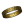

|
| Tutoriel |
|---|
| Macros |
| Niveau |
| Débutant |
| Temps d'exécution estimé |
| Auteur |
| Version de FreeCAD |
| Fichier(s) exemple(s) |
Contents
|
Cette page répertorie des macros qui ajoutent des fonctionnalités intéressantes à votre installation FreeCAD.
Macros
 Opération dans la vues 3D
Opération dans la vues 3D

- Macro Rotate View: Cette macro fait pivoter l'affichage actuel de 90 ° vers la gauche. Ne fonctionne que si vous êtes en vue de dessus.
- Macro View Rotation: Cette macro fournit une interface graphique, afin de permettre une rotation précise des objets dans la vue.
- Macro Texture Objects: Cette macro permet de mettre temporairement une image qui servira de texture sur les objets sélectionnés.
- Macro Mouse Cross: Cette macro change la forme de la souris en une croix de précision.
- Macro Align View to Face: Cette macro aligne la vue courante sur la face sélectionnée.
- Macro Align Object to View: Cette macro aligne l'objet sélectionné à la vue courante et prends les propriétés de celle-ci (Placement angle) de la caméra.
- Macro Align Camera to Working Plane: Cette macro aligne la caméra sur le plan courant Draft Working Plane.
- Macro Align Working Plane to Camera: Cette macro déplace le plan courant au centre de la vue courante.
- Macro Align Face Object to View: Cette macro aligne la face sélectionnée face à l'écran (Si un forage ou une face intérieure est sélectionnée le forage est placé perpendiculairement à l'écran).
-
 Macro Toggle Panels Visibility: Cette macro permet de basculer la visibilité des différentes vues dans FreeCAD, permettant à la fenêtre principale de prendre tout l'espace disponible de l'écran.
Macro Toggle Panels Visibility: Cette macro permet de basculer la visibilité des différentes vues dans FreeCAD, permettant à la fenêtre principale de prendre tout l'espace disponible de l'écran. - Macro_FCCamera: Cette macro peut faire pivoter l'écran dans un angle défini et dans l'axe défini, ce qui permet de créer un plan face à l'écran, positionne la face (par sa face ou par son axe) de l'objet sélectionné face à l'écran, permet de détecter la position de la caméra ...
- Macro Toggle Visibility: Ensemble de trois macros, macro 1: cache les objets qui ne sont pas sélectionnés, macro 2: affiche tous les objets, macro 3: cache tous les objets.
-
 Macro Toggle Visibility2: Ensemble de deux macros, macro 1: cache les objets non sélectionnés, macro 2: affiche les objets précédemment cachés avec l'affichage original.
Macro Toggle Visibility2: Ensemble de deux macros, macro 1: cache les objets non sélectionnés, macro 2: affiche les objets précédemment cachés avec l'affichage original. -
 Macro SelectVisible: Tous les objets dans la vue 3D sont sélectionnés.
Macro SelectVisible: Tous les objets dans la vue 3D sont sélectionnés. - Macro Manage Navigational Style: Cette paire de macros vous permettent de changer le style de navigation de la souris, "CADNavigationStyle" et "InventorNavigationStyle".
- Macro Duplicate Selection: Sélectionnez vos objets dans la vue 3D , si une sélection est dupliquée le curseur de la souris change en "ForbiddenCursor" et reste dans cet état tan que la sélection est dupliquée.
- Macro Copy3DViewToClipboard: Copie le contenu de la vue 3D redimensionné à 640, 480 px dans la mémoire (clipboard).
- Macro Perpendicular To Wire: Cette macro positionne l'objet sélectionné perpendiculairement au fil sélectionné.
- Macro Rotate To Point: Cette macro crée une rotation de l'objet sur lui même en utilisant comme axe de rotation le boundBox center, le centre massique ou le dernier point de souris cliqué sur l'objet ou autre en utilisant la touche CTRL.
- Macro FCTreeView: Cette macro liste tous les objets du projet en une liste sans tenir compte de la hiérarchie, et offre des options de triage de recherche en respectant la casse ou non par nom, label, longueur.
- Macro Select Hovering: Cette macro sélectionne les faces, les arêtes, les points au survol de la souris, les sélections sont comptabilisées.
- Macro ExpandTreeItem: cette macro déroule ou enroule le ou les items sélectionnés. S'il n'y a aucune sélection, tous les items sont déroulés ou enroulés
 Animation
Animation

- Macro_crank_simul: Rotation d'une bielle et d'un piston.
- Macro_Spring: Simulation de la compression d'un ressort.
- Macro_hinge: Simulation de la rotation d'une charnière.
- Macro_Assembly: Animation d'un assemblage.
- Macro_Animated_Constrain: Anime les angles contraints dans le sketcher
- Macro_Assemblage_Imprimante_3D: Simule les mouvements d'une imprimante 3D
- Constraint Draft: Simple exemple d'une animation réalisée avec les objets Draft en utilisant les expressions pour associer les éléments et simuler ou vérifier les mouvements. Ici la seule rotation du cercle entraine le mouvement des autres éléments associés.
- Macro Rubik Cube: Affiche un Rubik Cube et effectue de manière interactive des rotations.
Code et Script
- Macro MessageBox: Montre comment donner des informations à l'utilisateur dans les macros
-
 Macro Python Assistant Window: Cette macro fournit un espace de travail et permet de couper/copier/coller le code Python, il est segmenté de manière différentes les sections peuvent être sélectionnées et la macro est persistante entre les sessions FreeCAD.
Macro Python Assistant Window: Cette macro fournit un espace de travail et permet de couper/copier/coller le code Python, il est segmenté de manière différentes les sections peuvent être sélectionnées et la macro est persistante entre les sessions FreeCAD. -
 Macro Build Utility: Cette macro présente l'utilité de créer un projet à partir d'un ensemble de fichiers (sous-projets) en utilisant l'outil de fusion de projet.
Macro Build Utility: Cette macro présente l'utilité de créer un projet à partir d'un ensemble de fichiers (sous-projets) en utilisant l'outil de fusion de projet. - Macro Global Variable Watcher: Cette macro rend plus facilite la sélection des variables globales et le suivi de leurs valeurs.
 Conversion
Conversion

- Macro Extract Wires from Mesh: Extrait les fils d'un objet mesh sélectionné
- Macro MeshToPart: Cette macro convertit certaines mailles en pièces.
-
 Macro PartToVRML: Cette macro converti un objet Part en objet VRML mesh pour les petites tailles utilisez (VRML models Kicad et Blender)
Macro PartToVRML: Cette macro converti un objet Part en objet VRML mesh pour les petites tailles utilisez (VRML models Kicad et Blender) - Macro FaceToSketch: Convertit la Face sélectionnée en un sketch sans contraintes.
-
 Macro FCWire To Volume: Cette macro crée facilement une opération booléenne en utilisant des objets Draft wires. Juste sélectionner vos formes donnez la longueur à extruder et cliquez sur le bouton "Create"
Macro FCWire To Volume: Cette macro crée facilement une opération booléenne en utilisant des objets Draft wires. Juste sélectionner vos formes donnez la longueur à extruder et cliquez sur le bouton "Create" -
 Macro DeepCopy: Faire un composé d'un objet Part avec copie et placement de toutes ses formes.
Macro DeepCopy: Faire un composé d'un objet Part avec copie et placement de toutes ses formes.
 Atelier de dessin
Atelier de dessin

- Macro Automatic drawing: Permet de générer une mise en plan avec 4 vues (face, dessus, iso et droite). Il requiert des modifications pour être parfaitement fonctionnel.
- Macro CartoucheFC: Cette macro GUI permet de remplir simplement tous les champs du cartouche de la feuille mise en plan de FreeCAD, le format de la date et le symbole du mode de projection s'adaptent à la région EU ou US sélectionnée.
-
 Macro CartoucheFC Full: Cette macro GUI permet de remplir simplement tous les champs du cartouche des feuilles templates_Full : de FreeCAD (texteditable), le format de la date et le symbole de la mode de projection s'adaptent à la région de l'UE ou US sélectionnée.
Macro CartoucheFC Full: Cette macro GUI permet de remplir simplement tous les champs du cartouche des feuilles templates_Full : de FreeCAD (texteditable), le format de la date et le symbole de la mode de projection s'adaptent à la région de l'UE ou US sélectionnée. - Macro_CartoucheFC_2: Cette macro GUI permet de remplir simplement tous les champs du cartouche de la feuille modèle 2 (texteditable) de FreeCAD
- Macro_Normal_Vector: Obtenir le vecteur normal d'une face sélectionnée pour créer une vue d'une normale à cette face.
 Dxf 2D Draft
Dxf 2D Draft

- Macro Rectellipse: crée un rectellipse paramétrique.
-
 Macro_Make_Circle_3_Points: crée un cercle sur 3 points sélectionnés, les points peuvent être des objets (cet exemple réunit les deux exemples ci dessous, tous les paramètres se règlent simplement dans une fenêtre graphique).
Macro_Make_Circle_3_Points: crée un cercle sur 3 points sélectionnés, les points peuvent être des objets (cet exemple réunit les deux exemples ci dessous, tous les paramètres se règlent simplement dans une fenêtre graphique). - Macro_Draft_Circle_3_Points: crée un cercle orthogonal sur 3 points sélectionnés, les points peuvent être des objets.
- Macro_Draft_Circle_3_Points_3D: crée un cercle sur 3 points sélectionnés dans l’espace 3D, les points peuvent être des objets.
-
 Macro Make Arc 3 Points:crée un arc sur 3 points sélectionnés
Macro Make Arc 3 Points:crée un arc sur 3 points sélectionnés - Macro_Ellipse-Center+2Points: Crée un ellipse en sélectionnant 3 points (dans cet ordre): centre, grand rayon et petit rayon.
-
 Macro FC Convert Lines: cette macro convertit une ligne, bord (crée une nouvelle ligne) en ligne tiret, tiret point (axe), tiret point point, zigzag et "manuel" paramétrable.
Macro FC Convert Lines: cette macro convertit une ligne, bord (crée une nouvelle ligne) en ligne tiret, tiret point (axe), tiret point point, zigzag et "manuel" paramétrable. - Macro EdgesToArc: Converti la sélection Edges en Arc circulaire si l'opération est possible. Utile pour la restauration des arcs discretized.
- Macro Creating faces from a DXF file: Cette macro crée une face d'un objet créé à partir d'un fichier DXF.
-
 Macro DXF to Face and Sketch: Cette macro converti un élément sélectionné ou importé d'un fichier DXF en face ou sketch.
Macro DXF to Face and Sketch: Cette macro converti un élément sélectionné ou importé d'un fichier DXF en face ou sketch. -
 Macro_Compound_Plus: Petit ensemble de commandes Draft pour travailler les dessin 2D comme par exemple les dessins issus de fichiers DXF
Macro_Compound_Plus: Petit ensemble de commandes Draft pour travailler les dessin 2D comme par exemple les dessins issus de fichiers DXF -
 Macro Dxf To Shape: Macro utilitaire pour créer un fil unique avec un ensemble de lignes, la ligne créée peut être choisie entre: MakeWire, Bspline, BsplineCurve, BsplineCurve + Arc, Polygon, Bezier curve
Macro Dxf To Shape: Macro utilitaire pour créer un fil unique avec un ensemble de lignes, la ligne créée peut être choisie entre: MakeWire, Bspline, BsplineCurve, BsplineCurve + Arc, Polygon, Bezier curve
Fem
- Macro_GMSH: Crée un maillage FEM avec le générateur GMSH
 Info et mesures
Info et mesures

-
 Macro_FCInfo: Donne une série de renseignements sur la forme sélectionnée et peut afficher une conversion de la longueur, de l'inclinaison de la forme (degrés, radian, grade), de la surface, du volume et du poids de la forme dans la densité sélectionnée dans différentes unités de grandeur internationales et anglo-saxonne.
Macro_FCInfo: Donne une série de renseignements sur la forme sélectionnée et peut afficher une conversion de la longueur, de l'inclinaison de la forme (degrés, radian, grade), de la surface, du volume et du poids de la forme dans la densité sélectionnée dans différentes unités de grandeur internationales et anglo-saxonne. - Macro FCInfo Alternate Linux: même que ci-dessus, mais pour Linux
-
 Macro FCInfoGlass: Donne une série d'informations sur l'objet sélectionné directement dans la vue 3D
Macro FCInfoGlass: Donne une série d'informations sur l'objet sélectionné directement dans la vue 3D -
 Macro FCInfoToMouse: Donne les informations des coordonnées , longueur et angles en temps réel sur la souris dans une bulle annotation affichée dans l'écran 3D
Macro FCInfoToMouse: Donne les informations des coordonnées , longueur et angles en temps réel sur la souris dans une bulle annotation affichée dans l'écran 3D - Macro Delta xyz: Donne la valeur Delta xyz et la distance entre 2 points
- Macro ObjectInfo: Ce module "Info" affiche certains renseignements de l'objet sélectionné dans la vue "Vue combinée"
- Macro Dump Objects: Cette macro génère une liste de tous les objets dans le document courant - la liste peut être affichée dans une fenêtre ou dans la vue rapport.
-
 Macro_MeasureCircle: Calcule le rayon du cercle sur trois points ou sur l'arc ou circonférence du cercle.
Macro_MeasureCircle: Calcule le rayon du cercle sur trois points ou sur l'arc ou circonférence du cercle.
 Librairies
Librairies

- Macro screw_maker1_2: Cette macro crée une vis, un boulon . . . dans les normes ISO. Sélectionnez le type de vis, le diamètre nominal et la longueur (d'autres options seront disponibles)(screw_maker1_6.py.zip avec support Pyside) ((Screw Maker 2.0 - new version!)).
- Macro BOLTS: Bibliothèque libre et open-source pour la construction de boulons et visses au format standard pour les applications de CAD.
-
 Macro PartsLibrary: Démarre le navigateur de la bibliothèque de pièces.
Macro PartsLibrary: Démarre le navigateur de la bibliothèque de pièces.
 Fonctions mathématiques
Fonctions mathématiques

- Macro 3D Parametric Curve: Dessine le résultat de la courbe d'une fonction décrite par l'équation x(t), y(t) et z(t).
- Macro Draw 2D Function: trace une fonction décrite par une équation z=F(x)
- Macro Draw Parametric 2D Function: cette macro est basée sur la macro ci-dessus, mais pour les équations paramétriques et éventuellement polaires.
-
 Macro WorkFeatures: Utilitaire multiple : Pour accéder aux fonctions mathématiques faites Tab > Wire > Curves And Surfaces Launch Curves and Surfaces Menu ...
Macro WorkFeatures: Utilitaire multiple : Pour accéder aux fonctions mathématiques faites Tab > Wire > Curves And Surfaces Launch Curves and Surfaces Menu ...
equations.
 Multifonctionnalité
Multifonctionnalité

- Macro WorkFeatures: Utilitaire pour créer des plans à partir d'axes, plans depuis 3 points, axes sur une forme, obtenir de l'information sur les coordonnées d'une forme ainsi que plusieurs autres fonctionnalités pour faciliter la création de votre projet. Cet utilitaire s'affiche dans la vue combinée.
 Création d'objets
Création d'objets

-
 Macro Make Cube : créé un pavé droit (Parallélépipède rectangle) à partir de 4 points
Macro Make Cube : créé un pavé droit (Parallélépipède rectangle) à partir de 4 points - Macro_Solid Sweep: créé un solide en balayant un profil le long d'une trajectoire. Les éléments 2D peuvent être créés à l'aide des outils de l'interface graphique de FreeCAD.
- Macro Geodesic Dome: Cette macro crée la coquille d'un dôme géodésique.
- Macro Line_Length: Crée une ligne en donnant comme paramètres au choix les coordonnées de départ XYZ une longueur et un angle dans le plan X Y.
- Macro Cut Line: Cette macro crée x points ou coupe votre ligne originale en x lignes, donner le nombre de points, vous pouvez : créer des points ou non, créer les lignes (raccorder les points) ou non, créer vos ligne alternativement en deux couleurs (rouge et blanc) ou non au choix. La ligne originale n'est pas modifiée (valable sur ligne, cercle, forme . . .)
-
 Macro CirclePlus: Crée un cercle ou un arc en donnant différents paramètres au choix comme rayon, diamètre, circonférence, surface, début angle, fin d'angle, arc, anglecentral, corde, flèche, centre (point), placement. (même qu ci dessous mais avec GUI) plus crée un secteur avec face.
Macro CirclePlus: Crée un cercle ou un arc en donnant différents paramètres au choix comme rayon, diamètre, circonférence, surface, début angle, fin d'angle, arc, anglecentral, corde, flèche, centre (point), placement. (même qu ci dessous mais avec GUI) plus crée un secteur avec face. - Macro Circle: Crée un cercle ou un arc en donnant différents paramètres au choix comme rayon, diamètre, circonférence, surface, début angle, fin d'angle, arc, anglecentral, corde, flèche, centre (point), placement. (Même que ci dessus mais sans interface graphique)
- Macro Cut Circle: Coupe un cercle ou un arc en x arcs, sélectionnez l'objet(s) donner le nombre de coupures et lancez la macro (Le cercle ou arc original n'est pas modifié).
- Macro Triangle AH: Cette macro crée un triangle en donnant l'angle de tête et la hauteur du triangle (La tête du triangle est positionnée aux coordonnées 0.0.0)
-
 Macro Texture: Crée un projet à partir d'une image BMP en vue de créer une texture en 3D très facilement ou n'importe quelle autre utilisation possible vous êtes jute limité par votre imagination.
Macro Texture: Crée un projet à partir d'une image BMP en vue de créer une texture en 3D très facilement ou n'importe quelle autre utilisation possible vous êtes jute limité par votre imagination. - Macro Loft: Cette macro crée un loft de plusieurs lignes sélectionnées (Cette macro est spécialement conçue pour la macro Texture ci dessus)
-  Macro Circular Text: Cette macro crée un texte autour d'un cylindre
- Macro WireXYZ: Cette macro créer un filaire avec les coordonnées extraite depuis un fichier. Les coordonnées X, Y et Z sont séparés par un espace.
-
 Macro Repro Wire: Cette macro reproduit un ou les objets ou suBobjet sélectionnés ligne face ....
Macro Repro Wire: Cette macro reproduit un ou les objets ou suBobjet sélectionnés ligne face .... - Macro Apothem Based Prism GUI: Une interface graphique pour créer un prisme basé sur l'Apothème, (rayon intérieur).
-
 Macro_FCSpring_Helix_Variable: Cette macro créer un ressort variable.
Macro_FCSpring_Helix_Variable: Cette macro créer un ressort variable. - Macro Guitar fretboard: Calculer et construire un manche de guitare.
 Transformation d'objets
Transformation d'objets

- Macro ArrayCopy: copie l'objet sélectionné plusieurs fois selon une matrice.
- Macro FlattenWire: Cette macro aplatit les fils (Wire) du projet qui ne sont pas plan à la médiane de leurs coordonnées z.
- Macro FlattenWire3Points: Cette macro aplatit les fils (Wire) du projet qui ne sont plan et défini par 3 points
- Macro JointWire: Cette macro permet de trouver et de mettre en collaboration, à l'aide d'une ligne tous les bords non connectés, avec le plus proche non connecté.
- Macro Remove parametric history: Cela supprimera toutes les associativités paramétriques d'un objet, le transformant en une "simple" forme.
- Macro SuperWire: Cette macro crée un fil d'objets sélectionnés (lignes et arcs) même lorsque les méthodes de création du fil normal (par exemple avec l'outil de mise à niveau) échouent.
- Macro HealArcs: Parfois les arcs sont transformés en BSplines, par exemple, lorsqu'une opération d'échelle leurs ont été appliquées. Cette macro recrée des arcs valides. Utile avant l'exportation vers un fichier .dxf.
-
 Macro_CloneConvert: Crée un clone de ou des objets sélectionné(s) et le converti dans la grandeur et position sélectionnée (inch, mm, m, µm...).
Macro_CloneConvert: Crée un clone de ou des objets sélectionné(s) et le converti dans la grandeur et position sélectionnée (inch, mm, m, µm...). - Macro Image Scaling: Cette macro met facilement à l'échelle une image, photo, diagramme et image 2D pour pouvoir calquer cette image dans l'environnement 3D de FreeCAD.
- Macro MatrixTransform: Applique des transformations spatiales linéaires pour déformer les formes. Par exemple, mise à l'échelle non-uniforme, cisaillement, mise en miroir, inversion d'axes.
-
 Macro Connect And Sweep: Cette macro crée facilement une connexion entre deux objets , un objet et un point ou entre deux points (le centre des objets sont les points de départ et d'arrivée du sweep) une forme peut être choisie cercle polygone ellipse paramétrable
Macro Connect And Sweep: Cette macro crée facilement une connexion entre deux objets , un objet et un point ou entre deux points (le centre des objets sont les points de départ et d'arrivée du sweep) une forme peut être choisie cercle polygone ellipse paramétrable -
 Macro Section (parametrique): Alternative d'implantation de Part Section tool, plus appropriée pour la fabrication de chemin lissage (sweep).
Macro Section (parametrique): Alternative d'implantation de Part Section tool, plus appropriée pour la fabrication de chemin lissage (sweep). -
 Macro Overlap (outil parametrique): Opération Boolean. Similaire à Part Common, mais paramétrique et avec plus d'options de chevauchement.
Macro Overlap (outil parametrique): Opération Boolean. Similaire à Part Common, mais paramétrique et avec plus d'options de chevauchement.
Imprimante 3D
- Macro 3d Printer Slicer: Exporte votre conception vers un logiciel d'analyse par tranche (slicer) pour utilisation sur une imprimante 3D ou vers un logiciel CAM.
 Raytracing
Raytracing

- Macro_FreeCAD_to_Kerkythea: Exporte un fichier FreeCAD compatible avec Kerkythea
 Atelier feuille de calcul
Atelier feuille de calcul

-
 Macro Alias Manager: Aide à gestion les alias dans FreeCAD Spreadsheet workbench. La macro est capable de créer, de supprimer, de déplacer des alias et de créer un groupe de fichiers par "famille d'objets".
Macro Alias Manager: Aide à gestion les alias dans FreeCAD Spreadsheet workbench. La macro est capable de créer, de supprimer, de déplacer des alias et de créer un groupe de fichiers par "famille d'objets". - Macro Spreadsheet Tools: Cette macro permet de gérer les cellules à l'intérieur de l'atelier FreeCAD Spreadsheet.
- Macro FCTreeView: Macro pour lister tous les objets du projet dans une liste sans hiérarchie, options trier par nom, étiquette, visibilité, groupe, par longueur, recherche par nom, étiquette .... aucune sensibilité à la casse ou avec sensibilité à la casse et avec sélection de tous les objets affichés dans la fenêtre de la macro.
-
 Macro FCSpreadSheet Extract: Cette macro enregistre les données dans un fichier csv avec les formules ou dans un fichier xml.
Macro FCSpreadSheet Extract: Cette macro enregistre les données dans un fichier csv avec les formules ou dans un fichier xml.
Utilitaires
- Macro CenterFace: Cette macro trace un point rouge (editable) au centre de la face (mass), affiche les coordonnées XYZ du point dans la vue rapport ainsi que la surface de la face et ses coordonnées.
-
 Macro Center Align Objects with Faces or Edges: Cette macro couvre les contraintes suivantes: Contrainte concentrique entre les parties non cylindriques, Contrainte sur le centre de la face et / ou les bords, fonctionne également avec les nouveaux conteneurs Body et App :: Part, ainsi qu'avec la hiérarchie STEP..
Macro Center Align Objects with Faces or Edges: Cette macro couvre les contraintes suivantes: Contrainte concentrique entre les parties non cylindriques, Contrainte sur le centre de la face et / ou les bords, fonctionne également avec les nouveaux conteneurs Body et App :: Part, ainsi qu'avec la hiérarchie STEP.. -
 Macro Easy cutouts for Enclosure Design: Cette macro crée facilement un logement d'un objet sur un support. Il faut juste sélectionner le support puis l'objet (ex: composants électoniques Arduino)
Macro Easy cutouts for Enclosure Design: Cette macro crée facilement un logement d'un objet sur un support. Il faut juste sélectionner le support puis l'objet (ex: composants électoniques Arduino) - Macro MacroMenu: Ajoute les macros trouvées dans le répertoire de macros dans le menu des macros de FreeCAD.
-
 Macro_ForceRecompute: Forces le recalcul de votre projet.
Macro_ForceRecompute: Forces le recalcul de votre projet. - Macro Recompute Profiler: Mesure le temps nécessaire pour recalculer chaque objet dans un projet.
- Macro Shake Sketch: Démonte un un croquis pour y découvrir les parties non contraintes (a utiliser sur une copie de votre projet !).
-
 Macro Replace Part in Assembly: Remplace une pièce (simple copie) dans un "assemblage" par une autre pièce (simple copie).
Macro Replace Part in Assembly: Remplace une pièce (simple copie) dans un "assemblage" par une autre pièce (simple copie). -
 Macro Toggle Drawstyle: Cette macro permet de basculer l'DrawStyle de l'objet sélectionné.
Macro Toggle Drawstyle: Cette macro permet de basculer l'DrawStyle de l'objet sélectionné. - Macro HighlightCommon: Calcule les parties communes de deux objets.
-
 Macro HighlightDifference: Calcule les différences entre des shapes.
Macro HighlightDifference: Calcule les différences entre des shapes. - Macro cross_section: Affiche de manière interactive une section transversale avec l'aide d'une barre coulissante.
- Macro Print_SceneGraph: imprime la Scène Graphique SceneGraph.
-
 Macro_BoundingBox_Tracing: Cette macro trace 6 rectangles en rouge (1 rectangle par face avec couleur modifiable dans la macro) représentant le BoundingBox (dimensions externes maximum) de l'objet sélectionné.
Macro_BoundingBox_Tracing: Cette macro trace 6 rectangles en rouge (1 rectangle par face avec couleur modifiable dans la macro) représentant le BoundingBox (dimensions externes maximum) de l'objet sélectionné. - Macro Arch Axis System Repartition: Cette macro vous aide dans la création d'un système d'axes le long d'une ligne est selon divers paramètres.
- Macro Perpendicular To Wire: Cette macro positionne l'objet sélectionné perpendiculairement au fil sélectionné.
- Macro merge duplicate materials: Fusionne les objets ayants le même nom de base (avec différents numéros finissants par 001, 002,...) en un seul.
- Macro Unbind Numpad Shortcuts: Redéfinit les commandes de la vue standard à l'action des touches numériques Ctrl + chiffre, afin qu'elles ne pivotent pas la vue accidentellement lors de la saisie de nombres.
 Wizards
Wizards

{kind=link}
{kind=link}
{kind=link}
{kind=link}
{kind=link}
{kind=link}
{kind=link}
{kind=link}
{kind=link}
{kind=link}
{kind=link}
{kind=link}
{kind=link}
{kind=link}
{kind=link}
{kind=link}
{kind=link}
{kind=link}
{kind=link}
{kind=link}
- Macro Sheet Metal Unfolder: Créé une pièce dépliée à partir d'une pièce de métal en feuille.
- Macro Unroll Ruled Surface: permet de dérouler les surfaces et de les dessiner sur une page.
- Macro Unfold Box: permet de se dérouler les faces d'un objet de n'importe quelle forme et de les dessiner sur une page.
- Macro Airfoil Import & Scale : Importe et met à l'échelle sur la longueur choisie un fichier airfoil .dat.
-
 Macro Geneva Wheel: Permet de créer un mécanisme Croix de Malte à partir de rien. Les paramètres sont à régler dans la macro.
Macro Geneva Wheel: Permet de créer un mécanisme Croix de Malte à partir de rien. Les paramètres sont à régler dans la macro. - Macro Geneva Wheel GUI: Permet de créer un mécanisme Croix de Malte à partir de rien. Facilité de régler les paramètre dans l'interface graphique.
-
 Macro Cabinets32: crée les panneaux latéraux, supérieurs et fond pour une armoire avec les forages pour loger les pièces de raccordement de fabrication Hettich.
Macro Cabinets32: crée les panneaux latéraux, supérieurs et fond pour une armoire avec les forages pour loger les pièces de raccordement de fabrication Hettich. - Macro Half_turn_stairs: Creates a half turn (left/right) stair from a Data-file.
-
 Macro Half-Hull Model: Cette macro génère une coque en trois dimensions half-hull à partir d'une série de dessins 2D.
Macro Half-Hull Model: Cette macro génère une coque en trois dimensions half-hull à partir d'une série de dessins 2D. - Macro Stairs: Cette macro crée un escalier sur une hélice, créer la marche sélectionnez là et lancez la macro.
- Macro FCGear: Atelier supplémentaire pour créer des engrenages à taille droite, crémaillères, engrenages cycloïdes et coniques.
- Macro Corner shapes wizard: Cette macro est une application complète, il ouvre une boîte de dialogue demandant les dimensions angulaires de votre pièce, puis crée l'objet dans le document, et, crée une page avec les vues, de dessus, de face et latérale de la pièce.
- Macro_PropertyMemo: Cette petite macro vous permet de créer une nouvelle propriété à votre objet (mémo ou autre texte) ne fonctionne qu'avec les objets Draft.
{kind=link}
{kind=link}
 Autres macros intéressantes placées hors wiki.
Autres macros intéressantes placées hors wiki.
-
 By microelly2 : freeCAD_macro, geodata, Animation, freecad-nurbs, PieMenu, ..... autre
By microelly2 : freeCAD_macro, geodata, Animation, freecad-nurbs, PieMenu, ..... autre - By hamish2014: FreeCAD_assembly2, FreeCAD_drawing_dimensioning, ...
- By triplus: IconThemes, ShortCuts, NavigationIndicator, TabBar, Launcher, PersistentToolbars, PieMenu, ....
-
 By rockn: FreeCAD-Timber, FreeCAD-addons, FreeCAD-library, FreeCAD-StructuresBois, .... autre
By rockn: FreeCAD-Timber, FreeCAD-addons, FreeCAD-library, FreeCAD-StructuresBois, .... autre - By oddtopus: flamingo (atelier de placement d'objets pour structures métalliques)
- By dprojects: GetDimensions cette macro permet d'obtenir les dimensions de coupe d'un projet fabriqué en panneaux de particules (woodworking)
- By Siardeni: atelier de création de profils métalliques, tube carré, profil Z, création de palette, rotation, mise en plan ...
Utilisation
{kind=link}
Les macros citées ci-dessus peuvent être facilement ajoutées dans FreeCAD :
- À partir de la version FreeCAD v 0.17, un nouvel outil Addons Manager vous permet d'installer facilement n'importe quelle macro contenue dans cette page. Les instructions ci-dessous doivent encore être suivies si votre version de FreeCAD n'a pas encore le Gestionnaire d'addons.
- Copiez le code Python de la macro de la page de macro correspondante
- Dans FreeCAD, allez dans le menu Macro → Macros... puis cliquez sur le bouton « Créer » et saisissez un nom
- Collez le code Python que vous aviez copié
- Cliquez sur le bouton Sauvegarder, puis redémarrez FreeCAD
- Ouvrez le Gestionnaire de macros, sélectionnez votre nouvelle macro et cliquez sur « Lancer ».
- Tutoriel Comment installer une macro et comment palier aux erreurs copier/coller et autres petits pièges indésirables.
De plus, vous pouvez ajouter votre nouvelle macro à une barre d'outils personnalisée :
- Dans FreeCAD, ouvrez Outils → Personnaliser...
- Dans l'onglet Macros, ajoutez une nouvelle macro, et définissez si vous le désirez un icône et un raccourci-clavier
- Dans l'onglet Barres d'outils, créez une nouvelle barre d'outils, puis ajoutez votre macro, en la copiant dans la catégorie "Macros".
- Tutoriel Comment créer sa barre d'outils.
Ajouter de nouvelles macros à cette page
- Demandez les droits en écriture sur le wiki
- Créez une nouvelle page dont le nom commence par "Macro", par exemple "Macro_Ma_macro_excellente" éditer votre page et ajoutez un lien sur votre macro, faites ce qui suit:
- exemple :
* {{MacroLink|Text-x-python|Macro My Excellent Macro|Macro My Excellent Macro title}} : My excellent macro description.
- Text-x-python : icône par défaut (le nom de l'icône doit impérativement porter le même nom que le nom de la macro)
- Macro My Excellent Macro : nom de la macro
- Macro My Excellent Macro title : nom de la macro ou titre qui sera affiché
Un lien de votre future page est créé (texte en rouge).
- Dans cette page coller le code (titre) suivant:
(Exemple avec l'icône par défaut)
{{Macro|Icon=Text-x-python|Name=Macro_My_Excellent_Macro|Description=What my excellent macro does|Author=your username|Version=1.0|Date=YYYY-MM-DD}
(Exemple avec un icône personnalisé)
{{Macro|Icon=Macro_My_Excellent_Macro|Name=Macro_My_Excellent_Macro|Description=What my excellent macro does|Author=your username|Version=1.0|Date=YYYY-MM-DD}}
Ici pour les autres pays ("/fr" "/de" "/it" ...).
{{Macro/fr|Icon=Text-x-python|Name=Macro_My_Excellent_Macro|Name/fr=Macro_My_Excellent_Macro|Description=
What my excellent macro does|Author=your username|Version=1.0|Date=YYYY-MM-DD}
Ici pour les autres pays avec un icône personnalisé (example "/fr" "/de" "/it"....)
{{Macro/fr|Icon=Macro_My_Excellent_Macro|Name=Macro_My_Excellent_Macro|Name/fr=Macro_My_Excellent_Macro|Description=
What my excellent macro does|Author=your username|Version=1.0|Date=YYYY-MM-DD}}
- Vous pouvez aussi téléverser un icône personnalisé de format .png
ATTENTION, le nom de l'icône doit impérativement porter le même nom que le nom de la macro.
- exemple : " Ma_macro_excellente " sans mettre d'extension (l'extension est donnée par le système), et, remplacez " Icon=Text-x-python " par " Icon=Ma_macro_excellente "
- Text-x-python
 est l'icône par défaut de la page dédiée à la Macro.
est l'icône par défaut de la page dédiée à la Macro.
- Collez votre macro, en utilisant le template Code pour éviter d'ajouter des espaces à votre script. Ceci affichera la macro dans une police monospace, dans un encadré gris pâle, comme l'exemple ci-dessus.
- Si vous le voulez, importez une icône .png avec le nom exact de votre page macro (par ex. Macro_My_Excellent_Macro.png)
- Ajouter une image : une image peut être utile pour montrer ce que fait la macro. En option, vous pouvez créer un gif animé qui présente l'effet de la macro. La taille de l'image gif ne devrait pas excéder 500 x 500 px car le wiki ne peut pas redimensionner les gif animés ; si le gif est plus grand, l'animation ne fonctionnera pas.
- En option, vous pouvez ajouter davantage d'infos sur l'utilisation de votre macro, ses limitations, et les solutions de contournement.
- Il est également intéressant d'inclure les informations de version de FreeCAD dans votre macro. Ces informations vous permettent de localiser votre macro dans le temps par rapport à l'évolution de FreeCAD, faites : Menu > Aide > À propos de FreeCAD, cliquez sur « Copier dans le Presse-papiers » et coller ces informations dans votre macro.
Exemple :
#OS: Windows Vista #Platform: 32-bit #Version: 0.14.3389 #Python version: 2.6.2 #Qt version: 4.5.2 #Coin version: 3.1.0 #SoQt version: 1.4.1 #OCC version: 6.5.1
Il est aussi intéressant de créer un entête dans votre macro, cet entête servira dans la macro Plugin Loader programme d'installation de macro et vérificateur de versions. Aussi disponible addons_installer.FCMacro
Exemple :
__Title__="Title_Of_macro" __Author__ = "User_Name" __Version__ = "00.11" __Date__ = "2015-07-25" __Comment__ = "This is the comment of the macro" __Web__ = "http://forum.freecadweb.org/viewtopic.php?f=3&t=7384" __Wiki__ = "http://www.freecadweb.org/wiki/index.php?title=Macro_Title_Of_macro" __Icon__ = "/usr/lib/freecad/Mod/plugins/icons/Title_Of_macro" __IconW__ = "C:/Documents and Settings/YourUserName/Application Data/FreeCAD" __Help__ = "start the macro and follow the instructions" __Status__ = "stable" __Requires__ = "freecad 0.14.3706" __Communication__ = "http://www.freecadweb.org/wiki/index.php?title=User:User_Name"
- Ajoutez la à une catégorie existante, ou créez en une si la catégorie n'existe pas.